El equipo de EpiForecast-MX extiende su pipeline al Dengue, la primera enfermedad transmitida por vector del proyecto. Construimos la serie histórica semanal del dengue confirmado (2018 a 2026) directamente de los cuadros de los boletines epidemiológicos, la dejamos lista para el modelado y ya entrenamos los cuatro motores de pronóstico sobre ella, con validación temporal estricta.
El boletín reporta el dengue bajo la clasificación de la OMS 2009 en tres niveles de severidad. Con respaldo en una revisión de la literatura de pronóstico de dengue, decidimos modelar el dengue total (las tres categorías agregadas) y no cada severidad por separado.
El dengue grave es una fracción muy pequeña de los casos (alrededor de 0.1 a 0.2 por ciento en las Américas), lo que produce series estatales semanales casi en cero, ruidosas e intrínsecamente difíciles de pronosticar. La capacidad predictiva proviene de la autocorrelación y la estacionalidad de la serie agregada. Pronosticar la severidad es un problema de clasificación clínica, distinto del pronóstico de incidencia.
Es además el enfoque estándar en la literatura: los estudios de forecasting de dengue (incluidos los de México) pronostican casos totales, no estratos de severidad.
El Dengue vive en un cuadro propio del boletín (Enfermedades Transmitidas por Vector), separado del de los padecimientos neurológicos y con un diseño distinto: tres bloques de severidad, cada uno con cuatro columnas (casos de la semana, acumulado de hombres, acumulado de mujeres y acumulado del año anterior). Por cada entidad federativa hay 12 cifras que sumamos por categoría.
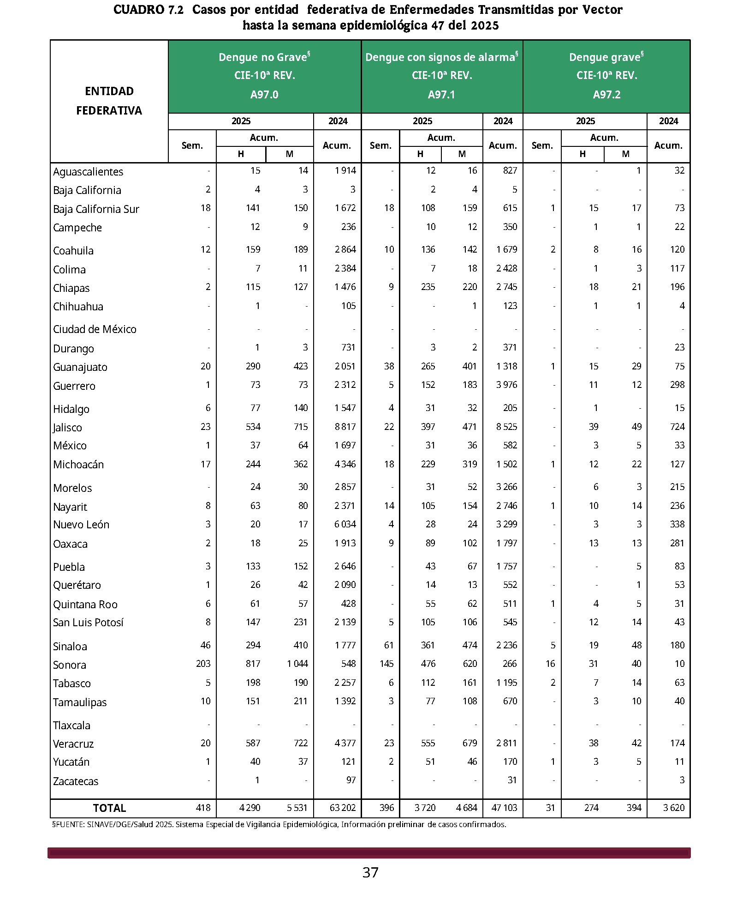
Se ancla en los códigos CIE A97.0/A97.1/A97.2 y en marcadores de entidad, estable ante los cambios de redacción del boletín entre años.
Se leen las 32 filas × 12 columnas con extracción estructural de tablas y se restringe a las entidades canónicas (sin acentos ni mayúsculas que estorben).
Se suman las tres categorías columna por columna en un único padecimiento "Dengue" (casos de la semana y acumulados por sexo).
La suma de las 32 entidades debe cuadrar con el renglón TOTAL impreso en el propio boletín (con tolerancia para erratas tipográficas).
Una validación descarta automáticamente los boletines donde la lectura duplica una columna, contrastando cada cifra contra el cuadro original del boletín.
El año y la semana se toman del nombre del boletín (fuente autoritativa), evitando desfases del texto de la página.
La clasificación de la OMS 2009 (A97.x, la misma de producción) aparece en los boletines desde la semana 27 de 2018. Extendimos el extractor para leer también ese formato más antiguo (un cuadro de 10 columnas, distinto al de 12 de 2020 en adelante), validándolo celda por celda contra el renglón TOTAL impreso. Eso sumó 72 semanas verificadas y llevó la serie de modelado a 391 semanas (2018-W27 a 2026): más ciclos anuales para que los modelos aprendan la estacionalidad, en especial DeepAR.
Antes de la semana 27 de 2018, el boletín reportaba el dengue con la clasificación de la OMS 1997 (A90 dengue clásico, A91 hemorrágico), en un cuadro por estatus de caso (confirmados y en estudio). Lo recuperamos también (226 semanas validadas, de 2014 a 2018) pero como una serie histórica nacional separada, NO mezclada con la de modelado.
Mezclar dos taxonomías y dos definiciones de caso introduciría un salto artificial que ensuciaría lo que aprende el modelo. Esa serie antigua queda como contexto histórico, no como insumo de entrenamiento.
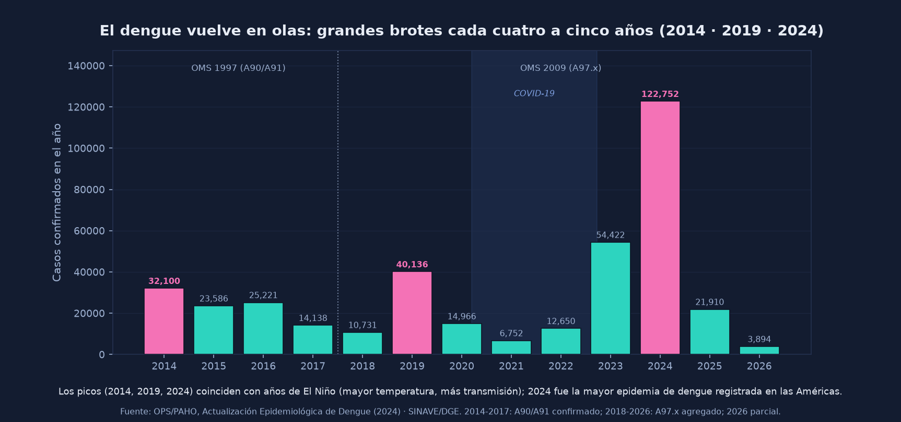
Visualizaciones exploratorias de la serie validada (2018 a 2026). No son pronósticos: ilustran la señal estacional, la geografía y la magnitud que los modelos deben capturar.
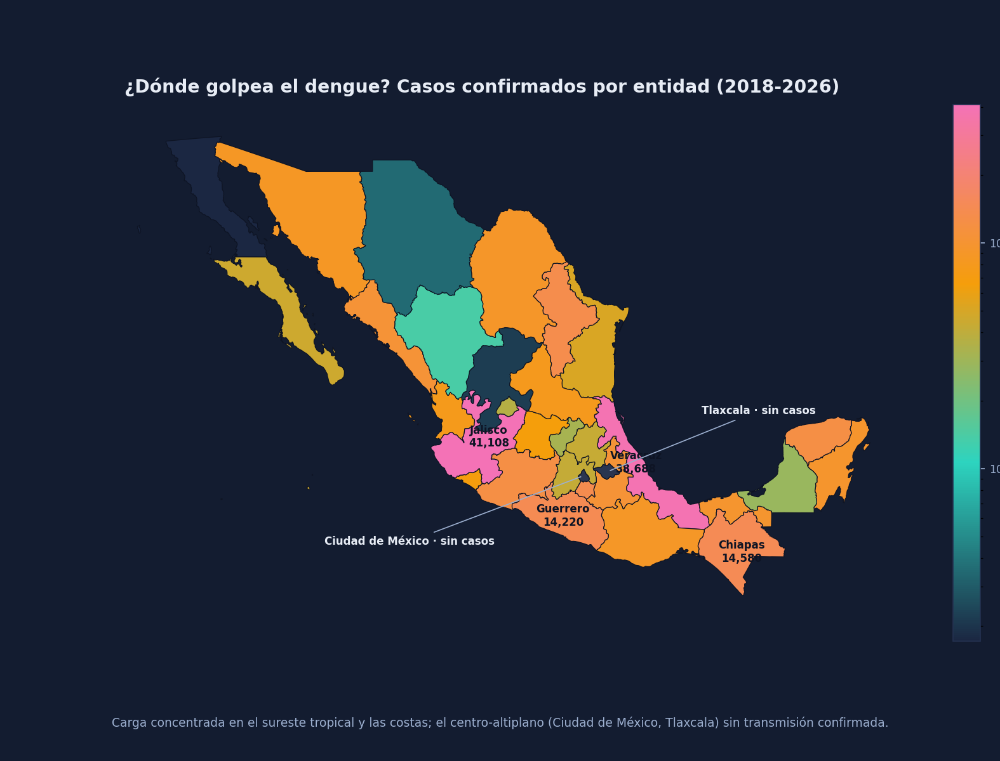
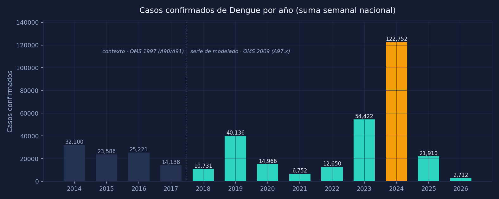
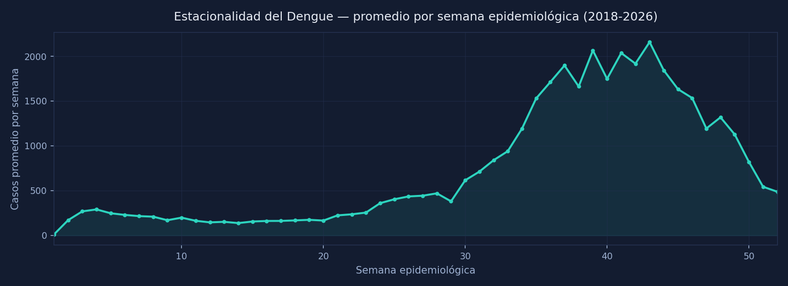
Con la serie ya validada, la siguiente fase es dejarla lista para el pronóstico: entenderla (EDA), integrarla y limpiarla, y afinar el feature engineering a la naturaleza del dengue (una arbovirosis con estacionalidad climática y brotes), no a la de los padecimientos neurológicos. Estas son las decisiones tomadas, con su porqué.
El EDA confirma que el dengue es una serie muy pronosticable y de fuerte estacionalidad, justo lo que sustenta modelarlo agregado:
La autocorrelación altísima (0.96 a una semana) significa que la propia historia de la serie predice bien el futuro cercano. La carga se concentra en el segundo semestre (pico promedio en la semana 43). Los años epidémicos son muy marcados (2024 fue cerca de 18 veces el año más bajo). Geográficamente, la señal vive en los estados tropicales y costeros; dos entidades (Ciudad de México y Tlaxcala) no registran dengue confirmado en todo el periodo.
Galería exploratoria completa sobre la serie validada (mapas de calor, distribuciones y autocorrelación), para verificar visualmente que el dato está sano:
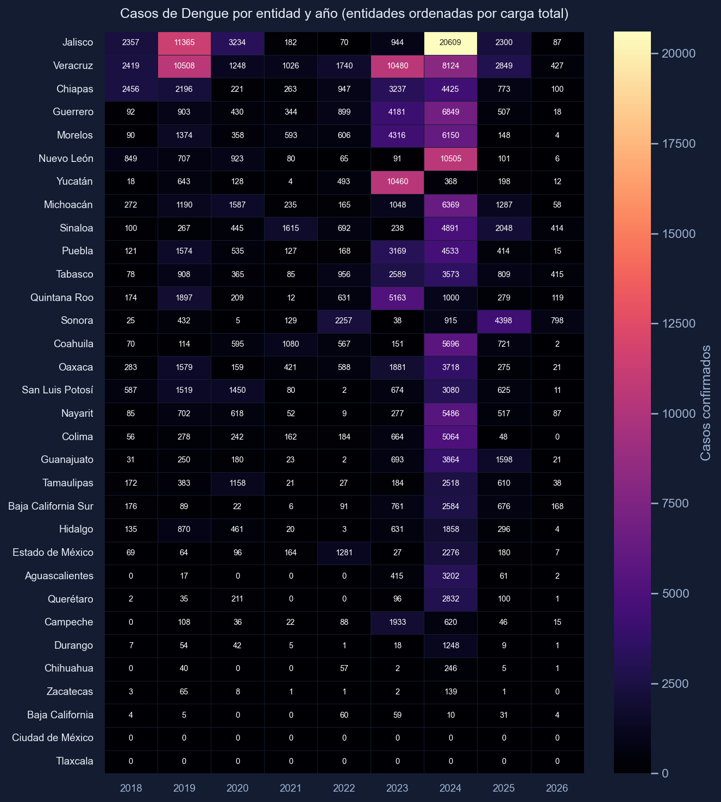
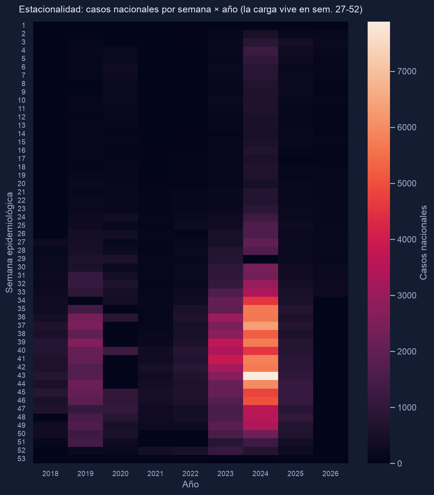
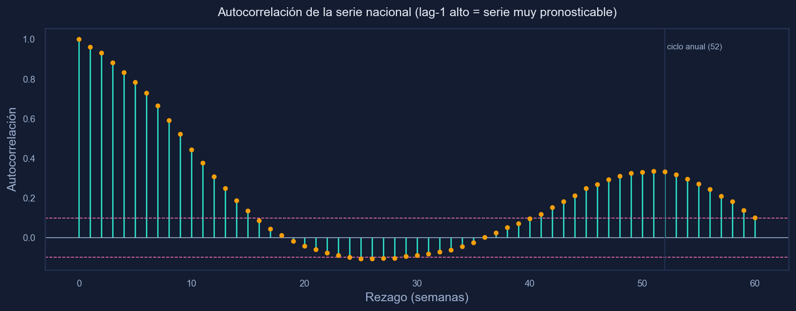
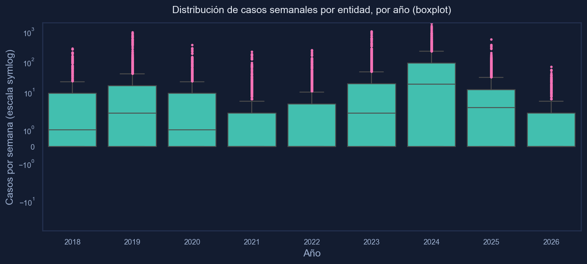
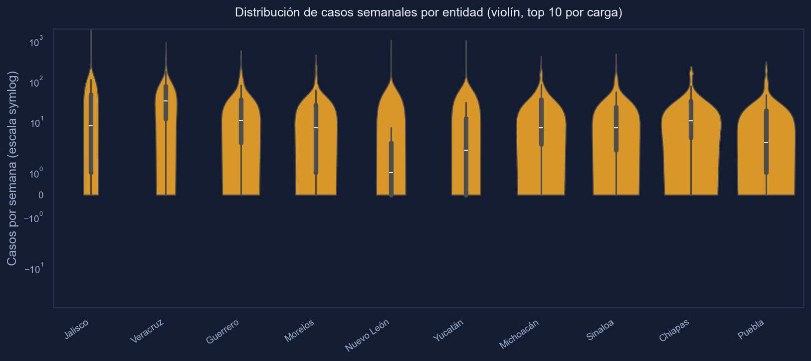
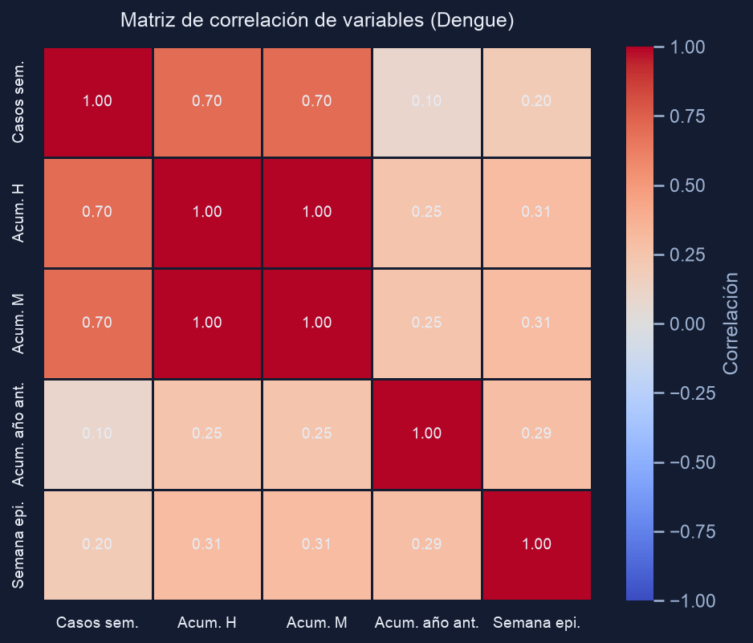
La serie se validó celda por celda contra el cuadro original del boletín (cero duplicados, 32 entidades por semana, consistencia interna verificada). Se integró al dataset consolidado del proyecto (74,560 filas: 62,016 de los tres padecimientos neurológicos más 12,544 de Dengue), con los nombres de entidad normalizados, y se empató con la base demográfica del INEGI. La serie quedó lista para el modelado: 32 entidades, sin valores faltantes de población ni región, e incidencia normalizable a tasa por cada 100 mil habitantes.
Nuestra validación detectó un error de captura en el propio boletín: en la semana 41 de 2024, el acumulado de "dengue con signos de alarma" para Zacatecas aparecía impreso como 14,522 hombres / 17,657 mujeres, una cifra imposible para un estado de incidencia casi nula. Lo corregimos a un valor consistente con los casos semanales validados (que daban 19 esa semana) y con las semanas vecinas.
La corrección queda documentada y es reproducible (no se "esconde" el dato): así un solo error de captura no contamina la señal que aprenderá el modelo.
Aquí tomamos una decisión deliberada y contraria al tratamiento estándar. El pipeline normalmente recorta los valores extremos (z-score > 3 reemplazado por la mediana) para suavizar ruido. En una arbovirosis eso sería un error grave: el brote epidémico es exactamente lo que queremos pronosticar, no una anomalía a borrar. Aplicar el recorte habitual eliminaría 334 semanas-estado de picos reales. Por eso, para Dengue desactivamos el recorte de outliers, ya configurado en el pipeline de preparación: las 12,544 filas se conservan sin alterar y los picos epidémicos llegan intactos al modelo.
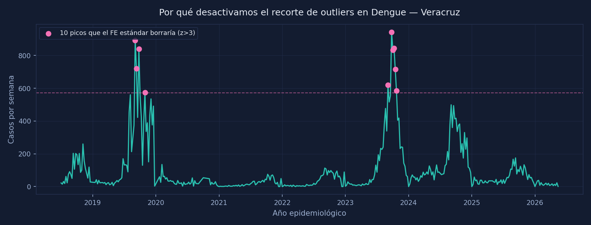
El dengue no se parece a una enfermedad crónica: es un fenómeno climático y biológico que estalla en brotes (como se ve en el mapa y en el ciclo de ~5 años, ligado a El Niño) y se apaga en temporada baja. Por eso no reutilizamos el feature engineering de los padecimientos neurológicos: lo rediseñamos pieza por pieza para la dinámica del mosquito. La decisión más visible es la de los outliers: el siguiente gráfico contrasta la serie real (lo que conserva el feature engineering de Dengue) contra lo que dejaría el recorte estándar, que aplanaría los brotes a la mediana.
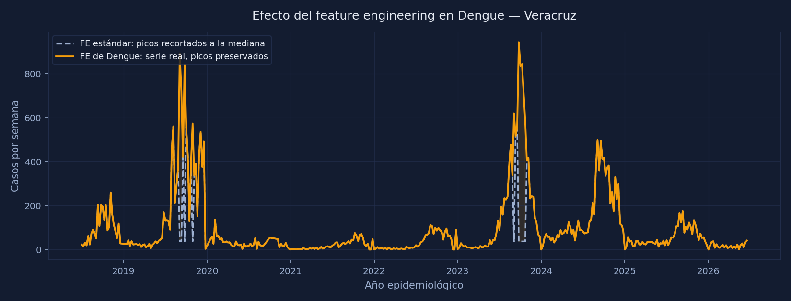
Los demás ajustes del modelado para Dengue:
La amplitud de la temporada crece con el nivel de casos; la estacionalidad anual es el componente dominante.
Los brotes arrancan de forma abrupta; el modelo permite quiebres de tendencia más marcados que en las series neurológicas.
2020-2022 no fue una disrupción para el dengue (siguió su ciclo natural); no se aplicará el tratamiento especial de ese periodo que sí usan los modelos de salud mental.
Se modelan los casos directos (no la tasa por población): en una arbovirosis con niveles muy bajos en temporada baja, la tasa por 100 mil comprime la señal y degrada el pronóstico.
Para las entidades neurológicas, una serie con pocos datos hereda el patrón de su región. Para Dengue la decisión es no usar ese fallback regional: una entidad sin transmisión no debe heredar la curva epidémica de un estado tropical. Si una entidad no tiene dengue, su pronóstico es cero.
Históricamente la altitud de la Ciudad de México (2,240 m) impedía al mosquito Aedes aegypti, y nuestros datos lo confirman: cero casos confirmados en todo el periodo. Pronosticar cero ahí es lo correcto; pedir prestado el patrón de Veracruz sería absurdo.
El matiz: el mosquito ya está colonizando la ciudad (detectado en 14 alcaldías) y en 2025 se reportaron los primeros casos locales. Por eso no fijamos un cero permanente: cada entidad se modela con sus propios datos, de modo que el pronóstico se actualizará solo cuando el dengue empiece a aparecer en el boletín.
Con la serie ya lista, entrenamos los cuatro motores de pronóstico del proyecto sobre el Dengue. Lo decisivo no es solo qué modelos usamos, sino cómo los validamos: con un esquema temporal estricto que evita la fuga de información del futuro hacia el pasado (data leakage), para que las métricas sean honestas y comparables entre motores.
Estacionalidad anual multiplicativa y quiebres de tendencia flexibles para los brotes. El más estable en error absoluto.
Red recurrente probabilística entrenada sobre la serie nacional agregada, con dos años de contexto. Captura bien la dinámica epidémica.
Prophet modela la estructura y XGBoost aprende los residuos con rezagos y medias móviles (todos sobre el pasado, sin mirar el presente).
Varios expertos combinados por un meta-modelo con pesos no negativos sobre predicciones fuera de muestra.
Toda la validación es temporal (TimeSeriesSplit): cada pliegue entrena con el pasado y se evalúa en el futuro inmediato, nunca al revés. El corte entre entrenamiento y validación es el 1 de enero de 2025, igual para los cuatro motores.
La validación cruzada se ajusta a cada motor: Prophet usa 4 pliegues de 53 semanas; DeepAR nacional, 2 pliegues de 26 semanas (cada pliegue conserva suficiente historia para entrenar sin relleno artificial); Ensemble y Stacking, pliegues temporales sobre los residuos y predicciones fuera de muestra. El pico epidémico real de 2024 queda en entrenamiento y la validación se mide sobre 2025-2026.
Una nota honesta sobre las cifras: en una serie epidémica con saltos de cero a decenas de miles de casos por semana, los errores porcentuales (SMAPE) son altos por construcción en las semanas de baja transmisión. Por eso la selección del motor productivo no se queda con un solo número, sino que pondera el desempeño sobre la realidad reciente del boletín.
Con los modelos entrenados y validados, el sistema genera el pronóstico productivo: para cada serie (entidad y sexo) se elige automáticamente el motor que mejor reproduce la realidad reciente del boletín 2026. A nivel nacional el motor productivo es —.
El dengue tiene un ciclo epidémico de aproximadamente cuatro o cinco años (los grandes brotes de 2019 y 2024), ligado a fenómenos climáticos como El Niño. Sería ideal pronosticar ese ciclo completo, pero la serie disponible (2018-2026) contiene solo dos ciclos: estadísticamente no alcanza para que un modelo aprenda a anticipar la magnitud de la próxima gran epidemia.
Por eso distinguimos dos horizontes. El pronóstico a 1 año (línea ámbar con banda) es la predicción precisa que los datos sí soportan. La proyección a 5 años (línea punteada) extiende el patrón estacional esperado a un nivel estable: ilustra cuándo ocurren las temporadas, no qué tan grande será el próximo brote. Es una guía de planeación, no una predicción de la próxima epidemia.
Esta tabla reproduce el cuadro del último boletín procesado, ya agregado a "Dengue total". Se alimenta del dato publicado por el proyecto: cuando llega un boletín nuevo y se regenera la serie, las cifras de abajo se actualizan solas.
| Entidad federativa | Casos (semana) | Acum. hombres | Acum. mujeres | Acum. total |
|---|---|---|---|---|
| Cargando el cuadro… | ||||
Dengue confirmado agregado (A97.0 + A97.1 + A97.2). Acumulados del año en curso. Fuente: boletines epidemiológicos del SINAVE / DGE / Secretaría de Salud.
Fuentes oficiales de los datos y del contexto epidemiológico de esta página.
Las cifras citadas (récord de 2024 en las Américas, concentración geográfica, ciclo epidémico ligado a El Niño) están respaldadas por las actualizaciones de OPS/PAHO y la OMS enlazadas arriba.